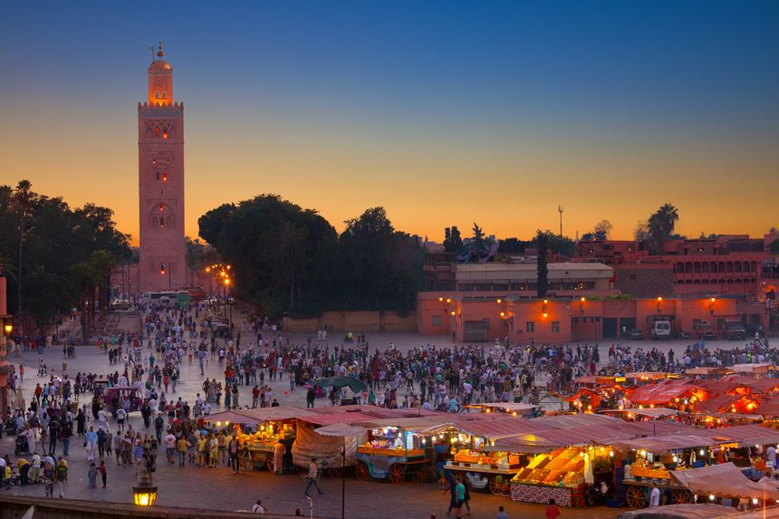
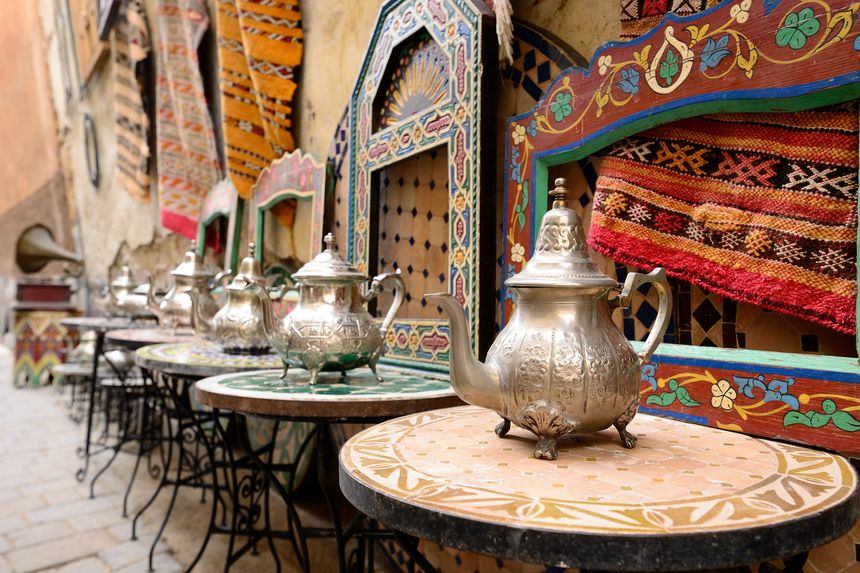
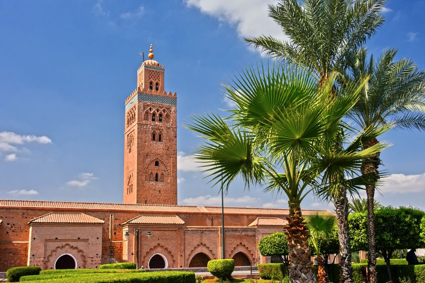
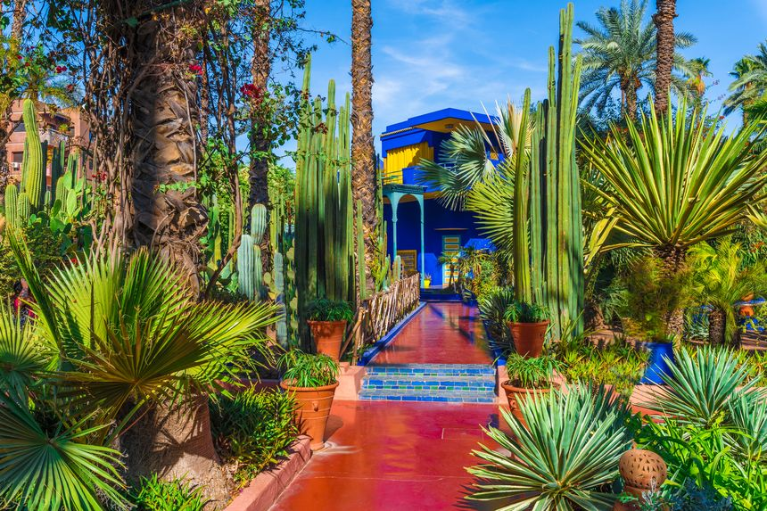
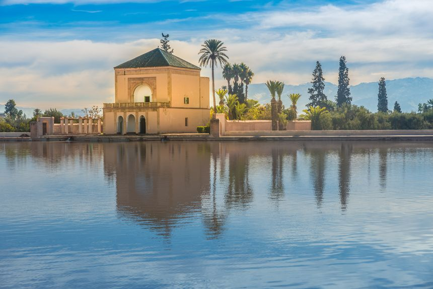
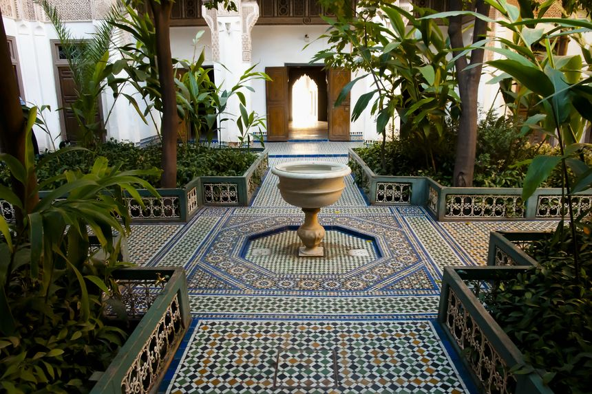

La place Jemaa El Fna
Le cœur battant de la ville. Située en plein centre de la Medina, la place Jemaa El Fna, classée au
patrimoine culturel mondial de l’UNESCO, est le rendez-vous des locaux et des touristes.
Toujours en effervescence, de jour comme de nuit, cette vaste place de marché abrite
marchands et commerçants ambulants.Entre charmeurs de serpents et diseuses de bonne
aventure, on se fraye un chemin pour accéder à l’entrée du souk, un incontournable à faire lors
de son passage dans la Ville Rouge.

Le souk
Passage obligé lors d’un séjour à Marrakech, le souk est un véritable dédale de ruelles sinueuses,
où il est difficile de ne pas se perdre. Mieux vaut donc se munir d’un plan avant d’arpenter les
allées étroites que les Marocains, eux, connaissent comme leur poche. Démarre alors un
enchevêtrement de petites boutiques débordant de sacs, de babouches et de divers objets issus
de l’artisanat marocain. Si vous êtes en quête de souvenirs à ramener à la maison, direction la
place aux épices, où les effluves de curcuma, coriandre, cannelle, et autres arômes embaument
et colorent les étals. Au détour d’une ruelle, vous tomberez sur quelques institutions culturelles
comme le musée de Marrakech, ou bien la maison de la photographie. À proximité également, la
Médersa Ben Youssef, école coranique, et joyau de l’architecture mauresque est à ne pas manquer.

La Koutoubia
Point de repère de la ville, la Koutoubia est le minaret iconique de Marrakech que l’on aperçoit à
des kilomètres. À quelques pas de la place Jemaa El Fna, la haute silhouette du minaret est
facilement reconnaissable, et a notamment servi de modèle à la fameuse Giralda de Séville.
Attenant à la mosquée du même nom, l’édifice révèle toute sa beauté à la tombée de la nuit,
lorsqu’il s’illumine.

Le jardin Majorelle
Autre étape essentielle lors d’une première visite à Marrakech, le jardin Majorelle. Une bulle de
verdure et de sérénité au beau milieu de l’agitation citadine. Un havre de paix où l’on déambule à
travers une végétation exotique, entre fontaines, bassins de nénuphars, et arbustes fleuris. Ce
n’est pas pour rien si le célèbre couturier français Yves Saint-Laurent en est tombé amoureux, et
a décidé d’en faire l’acquisition en 1980 avec son compagnon Pierre Bergé. Le jardin abrite
d’ailleurs un mémorial dédié à l’artiste, et jouxtant le jardin se trouve le musée consacré à l’œuvre
d’Yves Saint-Laurent. Depuis 2011, se trouve également un musée dédié à la culture berbère,
implanté en plein cœur du jardin Majorelle.

Les jardins de la Ménara
Si l’on souhaite s’évader loin du tumulte qui anime les rues de la Médina, nul besoin d’aller bien
loin. La Ménara, vaste oliveraie s’étendant sur plus de 100 hectares, offre aux Marrakchis et aux
touristes une oasis de fraîcheur dans le quartier de L’Hivernage, situé à l’extérieur des remparts.
Bien moins touristique que Majorelle, l’endroit est idéal pour un pique-nique en amoureux, ou
une promenade nature en famille. On prend le temps de flâner le long du paisible bassin central,
tout en contemplant le superbe panorama sur les sommets de l’Atlas.

Le palais de la Bahia
Pour seulement quelques dirhams, on aurait tort de se priver d’aller découvrir le Palais de la
Bahia, luxueux bâtiment à l’architecture typiquement marocaine. Datant de la fin du XIXe siècle,
ce palais de huit hectares et aujourd’hui l’un des sites culturels les plus visités au Maroc. À
l’intérieur, on y trouve une succession de pièces richement décorées ainsi que des jardins
aménagés dans la tradition des Riads marocains. On lève la tête pour admirer les splendides
plafonds de bois sculptés, avant de s’extasier sur la magnifique cour d’honneur, semblable à un
puits de lumière, entièrement recouverte de marbre.